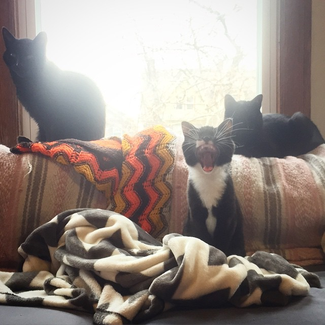

Set up your computer for today
Follow along with the slides:
tinyurl.com/GDIdetWPbasics
Optional: download images to use on your site later (save to Desktop).
Optional: We'll be using Google Chrome as our web browser, and recommend you use it to follow along.
Welcome!

Girl Develop It is here to provide affordable and accessible programs to learn software through mentorship and hands-on instruction.
Some "rules"
- We are here for you!
- Every question is important
- Help each other
- Have fun
Join Our Slack Group!
You can chat, ask questions, and keep up with fellow GDI members between classes.
Slack works with its own app, or in your web browser.
Sign up!
There's a channel called #introwordpress, where you're welcome to post questions, links, etc. related to class today.
Meet Your Instructor
Leeann Drees
- It's my job to make WordPress sites with ellell & co.!
- I live here in Detroit with 3 very cute cats (also some people).
- When not coding, I'm into cooking, baking, and eating (so, food!), and reading all the things.
- Twitter: @leeanndrees
- E-mail: leeann@girldevelopit.com

Let's meet the class!
Tell us your name
Have you used WordPress before?
What was your first concert?
##What is WordPress?

**WordPress** is an open-source blogging platform and content management system created in 2003.

###Let's break that down...
WordPress is an **open-source** blogging platform and content management system created in 2003.
software for which the original source code is made freely available and may be redistributed and modified.
Definition from Google.
###Let's break that down...
WordPress is an open-source **blogging platform** and content management system created in 2003.
blog: a regularly updated website or web page, typically one run by an individual or small group...
platform: software or service that helps make a website into a functioning blog.
Definitions from Google and About.com.
###Let's break that down...
WordPress is an open-source blogging platform and **content management system** created in 2003.
A content management system, or CMS, is a web application designed to make it easy for non-technical users to add [to], edit and manage a website.
Definition from Plone, apparently a CMS itself!
###Let's break that down...
WordPress is an open-source blogging platform and content management system **created in 2003**.
This is OLDER THAN DIRT, in internet years. Before Facebook (2004), YouTube (2005), or Twitter (2006).
Fortunately it's evolved a lot since its first incarnation. :)
###All that to say...
WordPress is a tool that lets you get your content & ideas published on the web, fast, with a minimal budget – or no budget at all.
##Let's Try It!
Navigate to [wordpress.com](http://wordpress.com).
Click the big blue "Create Website" button.

###Steps:
1. Pick a topic
2. Pick a theme
3. Pick a domain
4. Pick a plan
5. Create your account
##Welcome to WordPress.com!
Let's get settled in & take a look at our settings.
###Settings
We're starting at the bottom (cue Drake).

###Settings > General
- Change your title
- Choose your tagline
- a good one will include keywords and help your search engine rankings!
- Check your timezone
###Settings > Writing
- Set your default category
- you'll only have "Uncategorized" for now, but you can choose others later!
- Set your default post format
###Settings > Discussion
- Choose whether and how people can comment on your writing
- You can moderate comments as strictly as you wish
###Settings > Google Analytics
- Only for premium plans!
- Google Analytics helps you track your site's visitors
###Settings > Import
Adding content you've published elsewhere is no problem!
(Yes, even if it's not WordPress. Click "Other Importers" and see.)
###Other "Configure" Stuff
Let's take a quick look at:
- Sharing
- People
- Domains
##Let's Write Our First Post!

####Give your post:
- A title
- A few paragraphs of content
####Let's add:
- An image
- A link
- Some **bold** & _italicized_ text
- Some headings
Your editor has two modes: visual & HTML

**Visual editor**: what you see is (mostly) what you get.
**HTML editor**: makes code nerds happy!
I don't recommend using the post editor to change your text color, even though you can.
Any guesses as to why not?
How can I change the date & time of my post's publication?
(WordPress is a little bit like a time machine!)
##Before We Publish: Post Options

###Categories & Tags
Categories & Tags help you sort your blog's content.
**Categories** are for higher level sorting.
- Use 1 or 2 per post
- Have few total categories for your site
- Categories are usually capitalized, though it's a matter of preference
- Think of them like chapters in a book's table of contents
###Categories & Tags
**Tags** can help link all related posts to each other.
- Use as many as you need per post
- Tags are often lowercased, though again it's up to you!
- Think of them like index entries
###Categories & Tags
An example:
- **Post title**: Chocolate Chip & Coconut Cookies
- **Categories**: Dessert, Recipes
- **Tags**: chocolate, coconut, cookies, holiday favorites
###Featured Image
A featured image represent the contents, mood, or theme of a post or page. Posts and pages can have a single featured image, which many themes and tools can use to enhance the presentation of your site.
From WordPress Support
###Sharing
...is caring

###Post Format
Your theme may or may not display content differently based on this choice.
[Guide to WordPress post formats.](https://en.support.wordpress.com/posts/post-formats/)
###More Options > Slug
- The URL fragment that will refer to this post
- Example: myfoodblog.wordpress.com/chocolate-chip-coconut-cookies
- WordPress generates one and usually it's fine, but you may want to make it shorter or more relevant
- No capitalization or spaces – use hyphens instead
- Use keywords here to help your SEO!
###More Options > Excerpt
- Some themes may display an excerpt on your home page
- WordPress usually generates one, but you can set a custom one here
##Ok can we publish now?
- Preview first!
- Then go for it :)
##Let's Add a Page
Spoiler alert: It's almost exactly like adding a post!
###Page Hierarchy
Pages can be hierarchical, if you set a "Parent Page."
Think of your site like an outline:
- Home
- About
- Our Team
- Our History
- Contact
"About" is the _parent page_ to "Our Team" and "Our History."
**Pages** are best for static, timeless material you want your users to always be able to find easily. They can serve as a backbone for your site.
Examples: About, Contact, Location, Mission
**Posts** are best for time-sensitive updates and creating conversation. If you're running a blog, most of your content will be in the form of posts!
Examples: This Month's Workshops, Springtime Recipes, We're in the Newspaper
##Menus
How do we get to all those pages?

###Menus
- Your theme controls how many menu areas you have
- Common menu areas:
- header
- sidebar
- footer
- Social links menus will convert your Twitter, Facebook, etc. links into nifty icons!
##Themes

###What is a theme?
- Themes control the appearance of your site, but they don't alter the content at all
- Try changing your theme and see what happens!
- Click "Try and Customize" to make sure you like it first.
###Choosing the Best Theme
- There are tons out there and it can be overwhelming!
- What kind of content are you planning to show? Does this theme have all the areas you need to display images, text, sidebars, etc.?
- Is it responsive?
- Is it fast?
##WordPress.com vs. WordPress.org
Yes, they're different things!
We've been using WordPress.com to create a blog that is hosted and managed by WordPress.com.
------
Another option is to purchase your own hosting and install the WordPress software (available from _wordpress.org_) on a site you own and manage.
These sites are called **self-hosted WordPress sites**.
###Which one is best for you?
It depends what you want to do!
In short, WordPress.com is easier but gives you less control. With a self-hosted site, you have more power and more responsibility.
###Which one is best for you?
WordPress.com is like renting an apartment; self-hosted sites are like buying a house.
Let's look at [this comparison from Skillcrush](http://skillcrush.com/2014/06/05/wordpress-com-vs-wordpress-org/).
(If you're curious about self-hosted sites, look out for our **Intro to WordPress** workshop.)
###Good news: you can always move!
Remember the handy import/export tool? It'll help you move your content from WordPress.com to a self-hosted site, or vice versa, if your needs change!
##What Now?
You're a blogger, baby!

###What Now?
- Keep it up!
- Keep learning!
- If you get stuck:
- Google it
- Ask our Slack team
- Ask on Twitter with #WordPress
- Get involved in the WordPress community
- [Metro Detroit WordPress Meetup](http://www.meetup.com/metro-detroit-wordpress-meetup/)
Upcoming Girl Develop It - Detroit Events!
-
Tomorrow: Code & Tea
-
5/3: Film Screening: Code: Debugging the Gender Gap
-
5/14 & 5/15: Intro to Git & Github
Watch our Meetup group for more great events!
Be sure to follow GDI on Twitter (@GDIdet) and Facebook for all the latest classes, events, and ways to get involved!